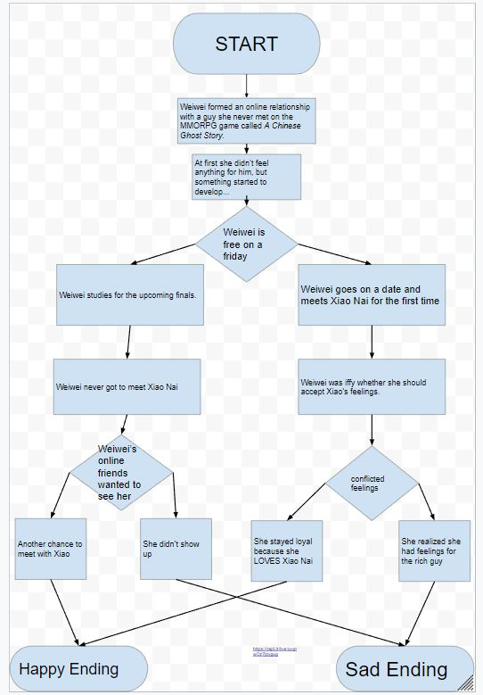

Gamesite
The object of the game is to avoid the spirtes moving towards the middle and edge. The longer the player survives, the higher the score will be. The sprites will appear at random different of time it get difficult if the sprite all line up at the same time.
https://scratch.mit.edu/projects/258846339/LoveO2O is about a girl named Weiweiwho has to choose between her ex and Xiao. She wants to move on but she still reminisces about her ex. She knows her ex will be bad for her but they have so much memories together.
During the process of the program, a difficulty was giving the user the option to use the letter A or B capitalized and lowercased. The solution was simple; we just needed to use "or" the make it so either capitalized or lowercased as long as "A" or "B" is valid. We found an opportunity to add different paths to one ending. We are able to this by giving different options to get from event to another. Each scene is seperated into functions to make it simple to get from one scene to another. The user only has to choose one of the two options which is "A" and "B". Each of the functions are easily connected by choice. My favorite story was The Adventures of Spider-Ham because the storyline was simple and it was easy to navigate from one scene to another.